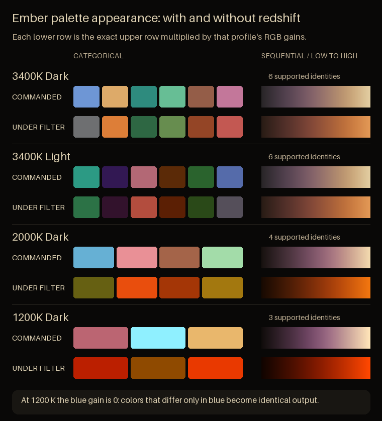

General-purpose dark
3400K Dark
A near-black family for ordinary Night Shift use, with the full six-color categorical bank.
Warm-transform color systems
Ember is a family of terminal, interface, chart, and sequential palettes authored to preserve contrast and meaningful color identity under 3400K, 2000K, and 1200K display transforms.
Four constrained families
Ember does not pretend every daytime color survives a deep warm shift. Each profile exposes an honest categorical capacity while retaining the same surface, foreground, terminal, and sequential contracts.
General-purpose dark
A near-black family for ordinary Night Shift use, with the full six-color categorical bank.
Moderate-warm light
A warm paper-like family for light interfaces under a moderate display shift.
Deep redshift
A dark specialist family for strong Redshift use, with four defensible color identities.
Extreme stress profile
A dark family for extreme low-temperature transforms, limited to three honest identities.
The mechanism
A warm filter is not a translucent orange layer. It applies different gains to red, green, and blue, collapsing distinctions that ordinary daytime palettes depend on.
Each family is tested under its target per-channel transform rather than judged only in commanded sRGB.
Hard transformed-state gates come first; daytime separation is improved only inside the surviving solution space.
The same authored families drive terminal themes, UI roles, chart colors, heatmaps, CSS, JSON, and Python.

Use Ember
Ember ships as files and APIs, not as another filter application. Keep the warm-display tool you already use.
Terminal
Ready-made schemes are included for Alacritty, iTerm2, and Windows Terminal.
themes/terminal/
├── alacritty/
├── iterm2/
└── windows-terminal/Python and Matplotlib
Install from GitHub, select a profile, and use the same capacity-aware contracts as the generated files.
python -m pip install \
"ember-palettes @ git+https://github.com/carpdiem/ember.git"
from ember import categorical, sequential
categorical("3400k-dark")
sequential("3400k-dark")CSS and JSON
One semantic attribute selects a family; CSS variables carry surfaces, text, categories, and the sequential ramp.
<link rel="stylesheet" href="palettes/ember.css">
<main data-ember-palette="2000k-dark">
...
</main>{kind=link}
{kind=link}
{kind=link}
{kind=link}